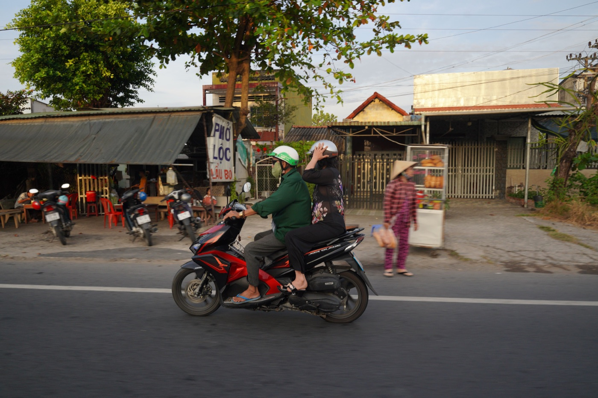
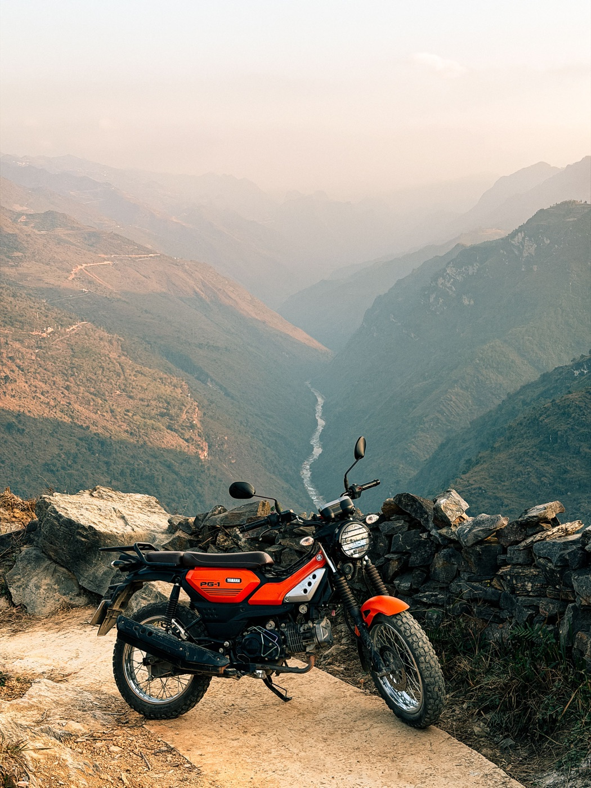

Как правильно тормозить на байке

Уверенная остановка начинается не с сильного нажатия на ручку, а с правильной последовательности действий. На большинстве скутеров правая ручка управляет передним тормозом, левая — задним, но перед поездкой это нужно проверить на конкретном байке.
Почему нужны оба тормоза
При замедлении вес переносится вперёд, поэтому переднее колесо получает больше сцепления и выполняет значительную часть работы. Один задний тормоз удлиняет остановку и может вызвать занос. Резко зажатый передний тормоз при повёрнутом руле тоже опасен. Рабочая привычка — плавно и одновременно наращивать усилие на обеих ручках.
Обычное торможение по шагам
- Заранее отпусти газ и посмотри туда, где хочешь остановиться.
- Выпрями байк, насколько позволяет ситуация.
- Начни мягко нажимать обе ручки.
- Увеличивай усилие постепенно, не хватай тормоз одним рывком.
- Перед полной остановкой поставь ногу только когда скорость уже минимальна.
На пустой сухой площадке полезно несколько раз остановиться с 20–30 км/ч и запомнить ощущение ручек. Так становится понятно, где начинается реальное замедление и не проваливается ли тормоз.

Поворот, песок и мокрая разметка
Максимально тормози до поворота. В наклоне оставляй только мягкую коррекцию: у колеса меньше запаса сцепления. На песке, металлических крышках, белой разметке и мокрой плитке любые действия должны быть плавнее. Увеличь дистанцию и держи байк вертикальнее.
Экстренная остановка
Сначала быстро закрой газ, выпрями руль и уверенно наращивай оба тормоза. Смотри не на препятствие, а в свободный коридор. Если колесо начало скользить, немного ослабь соответствующую ручку и снова плавно добавь усилие. Байк с ABS помогает избежать блокировки, но не отменяет дистанцию и хорошую резину.
Ошибки новичка
- ехать с пальцами, постоянно поджимающими тормоз;
- использовать только задний тормоз;
- резко хватать переднюю ручку с повёрнутым рулём;
- тормозить в последний момент перед светофором;
- не проверять тормоза после дождя, мойки или долгой стоянки.
Короткий вывод
Правильное торможение — оба тормоза, прямой байк, плавное нарастание усилия и запас дистанции. После покупки обязательно потренируйся на безопасной площадке. Перед выездом используй наш двухминутный чек-лист байка, а для горных дорог прочитай материал про подъёмы и спуски на 50cc.